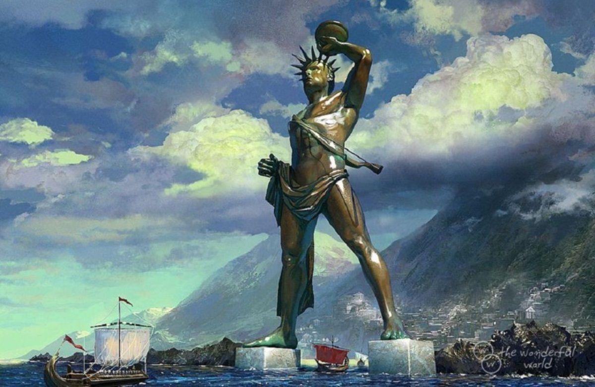

7 чудес світу - запаморочливі споруди Стародавнього світу!
Сім чудес світу, або Сім чудес Стародавнього світу — список найбільш прославлених пам'яток античної культури часів Ойкумени, з якого до наших часів збереглась лише Піраміда Хеопса. Складання списку найславетніших поетів, філософів, полководців, великих царів, як і пам'яток архітектури і мистецтва — традиційний «малий» жанр грецької елліністичної поезії і свого роду вправа в риториці. Сам вибір числа освячений найдавнішими уявленнями про його наповненість, закінченість і досконалість, число 7 вважалося священним числом бога Аполлона (Семеро проти Фів, Сім мудреців і т. і.). Подібно до збірників висловлювань знаменитих мудреців, збірок анекдотів і розповідей про дива, твори про Сім чудес світу були популярні в античну епоху і містили описи найграндіозніших, найпрекрасніших або в технічному сенсі найбільш захопливих будівель і пам'ятників мистецтва. Ось чому їх називали чудесами, в той час як в списку відсутні багато справжніх шедеврів стародавньої архітектури та мистецтва — Акрополь в Афінах із творінням Фідія — статуєю Афіни, Парфенон, прославлена статуя Афродіти Кнідської роботи Праксітеля і т. і. Згадки про Сім чудес з'являються у творах грецьких авторів, починаючи з епохи еллінізму. Їх треба було знати вже в школі, про них писали вчені й поети. У тексті одного єгипетського папірусу, що являв собою свого роду навчальний посібник, згадуються обов'язкові для заучування імена знаменитих законодавців, живописців, скульпторів, архітекторів, винахідників, найбільші острови, гори й річки і, нарешті, сім чудес світу. «Відбір» чудес відбувався поступово, і одні чудеса змінювали інші.
Сьогодні "чудесами світу" величають безліч як сучасних, так і старовинних будівель, видовищ і незвичайних явищ нашої планети, але ми хочемо нагадати вам про класичну сімку. Ці 7 творінь настільки складні, ексклюзивні і вражаючі, що залишаться в пам'яті людства назавжди.
Єгипетські піраміди

Піраміда Хеопса - найдавніше з чудес світу, створена приблизно в 2540 р. до н. е .. Крім того, це єдина споруда, що збереглась до наших днів. Вона досягає близько 150 м у висоту, а довжина кожної сторони у підстави більше 220 м. Для зведення цієї грандіозної споруди треба було 2,3 млн. кам'яних блоків вагою по 2,5 тонни кожен.
Висячі сади Семіраміди
Такий приголомшливий подарунок зробив вавилонський цар Навуходоносор II своєї дружини Амітіс приблизно в 605 р. до н. е. Вони являти собою східчасту піраміду, покриту грунтом і засаджену різноманітними рослинами так, що здавалося, ніби вони зависли в повітрі.
Статуя Зевса в Олімпії
Велична статуя Зевса, створена в 5 столітті до н. е. і згоріла в пожежі у 476 році, сягала 15 м у висоту, розташовуючись в головному храмі грецького міста Олімпія. Чудове творіння було обшите слоновою кісткою і інкрустовано золотом.
Храм Артеміди в Ефесі
Неймовірний храм, присвячений богині Артеміді, був зведений у 550 р. до н. е. В 356 р. до н. е. Герострат знищив цю розкішну будівля з білого каменю. Після цього споруда була відновлена, але лише на деякий нетривалий час.
Мавзолей в Галікарнасі

Ця неймовірно вражаюча усипальниця була побудована для правителя по імені Мавсол (звідси і походить слово "мавзолей"). Будівлю створили в 4 столітті до н. е. в місті Галікарнас (сучасна Туреччина). Гробниця заввишки 46 м і довжиною 60 м, облицьована білим мармуром, була зруйнована під час землетрусу в 18 столітті.
Колосс Родоський
Ця вражаюча статуя бога Геліоса на острові Родос, досягає 60 м у висоту, була створена з глини, бронзи і металевого каркаса. Через 65 років після її установки, через землетрус статуя зламалася в області колін і впала.
Олександрійський маяк
Цей маяк був побудований в 3 столітті до н.е. на острові Фарос. Досягаючи 135 м у висоту маяк був чудовим орієнтиром для суден, а його світло поширювався на 60 км навколо. У 796 році він був зруйнований під час землетрусу.
Сім нових чудес світу
- Великий китайський мур
- Петра
- Тадж-Махал
- Колізей
- Мачу-Пікчу
- Христос-Спаситель
- Чичен-Іца